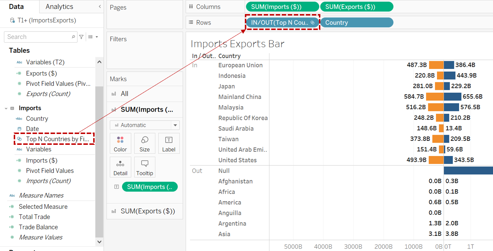
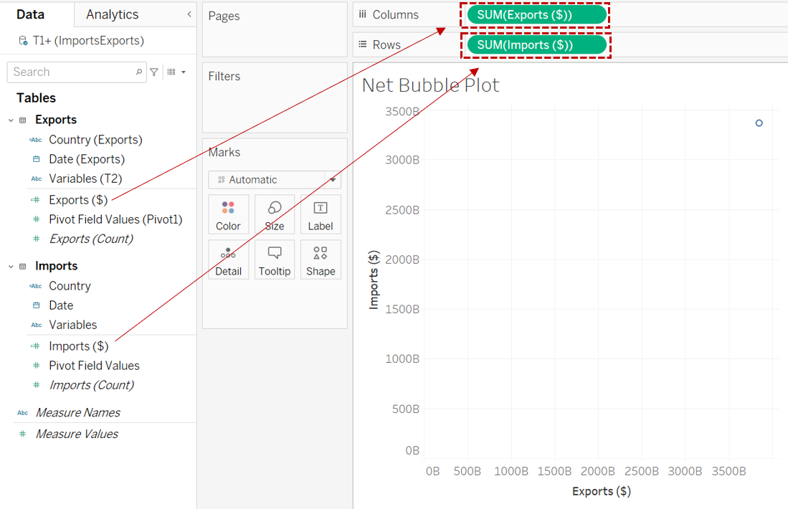
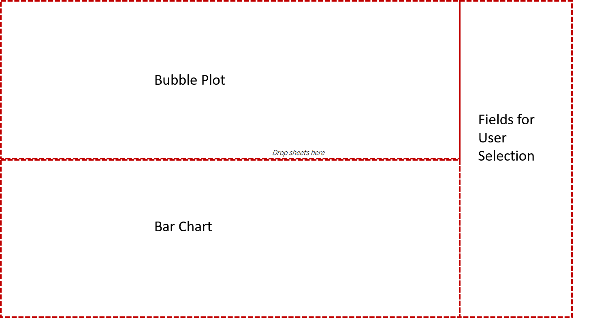
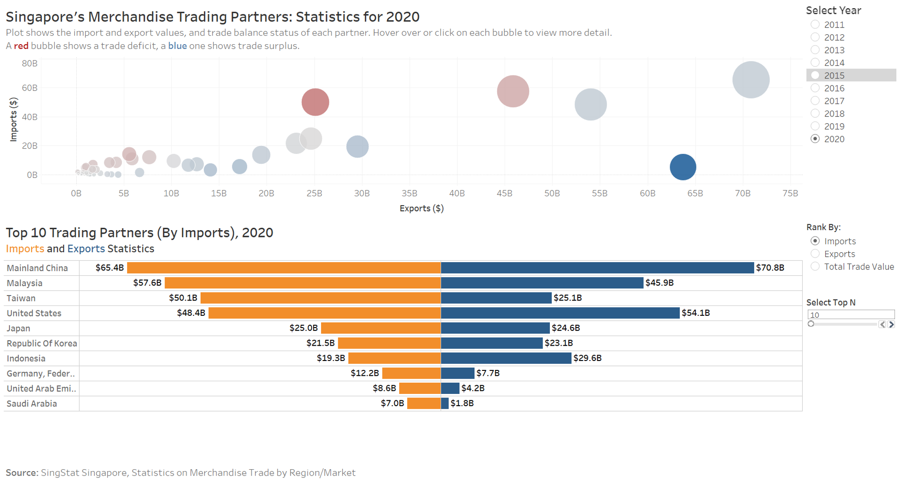
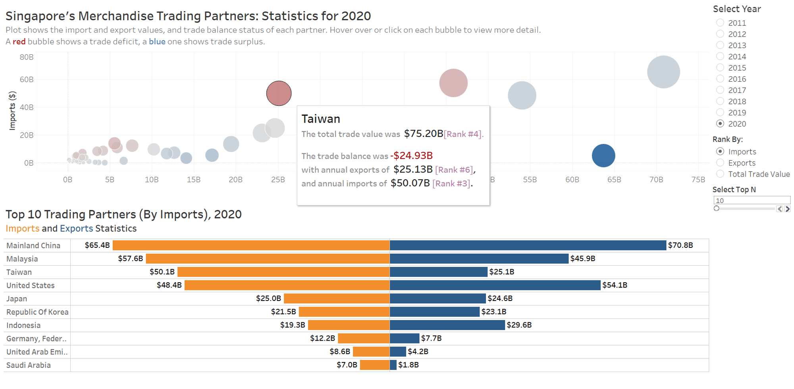
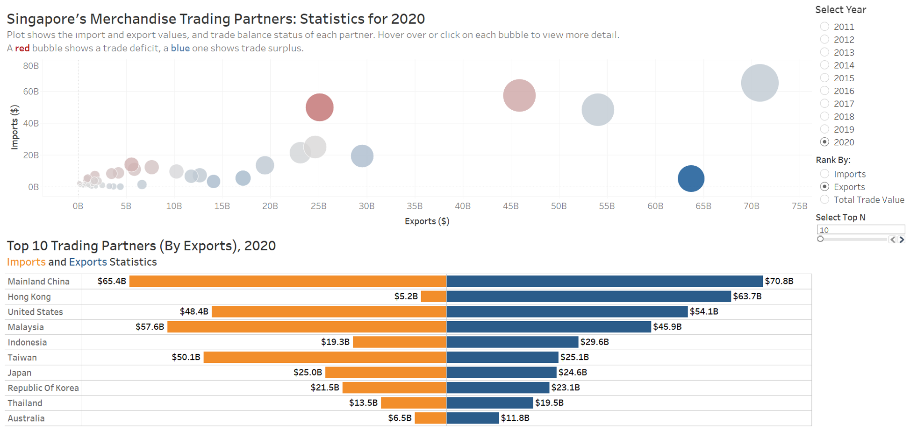
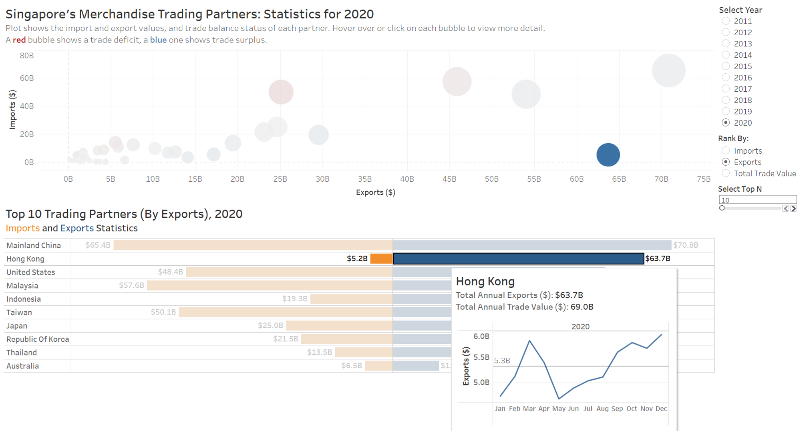

Overview
Statistics on Singapores merchandise trade partners are compiled by Enterprise Singapore, and provided by Department of Statistics, Singapore (DOS). An interactive bubble plot illustrating the imports and exports numbers for the year 2020 for various regions is displayed in DOS Singstat infographics site. We have attempted a makeover on this visualization using Tableau to improve on its clarity and interactivity as part on an assignment for an MITB module on Visual Analytics and Applications. This post would illustrate the makeover process and cover the following sections:
The Original Visualization
Critique to Identify Areas for Improvement
- Clarity
- Aesthetics
Sketch of Proposed Design and Comments
Step-by-Step Guide to Creating the Proposed Visualization in Tableau
The Final Visualization
Major Insights Revealed by the Final Visualization Prepared
1. The Original Visualization
2. Critique to Identify Areas for Improvement
2.1 Clarity
Chart is restricted to 2020 figures. There are no means to compare with information from other years. This information that these are 2020 figures is derived from the title on the original website, which is missing from the above chart.
Level of detail is lacking for this interactive chart, especially in the tooltip. One of the main points covered by the bubble plot is the status of trade balance for each country/region. This is derived from the difference between the export and import value. The tooltip of each location point only shows the country/region, and a trade figure. It is also not immediately apparent whether this figure is an import value, export value, total trade value or trade balance figure. The reader must decipher this information on his/her own by reading off the axes.
Content illustrated in the commentary at the bottom is inconsistent with that of the chart displayed. The circle for United States is in the Net Exporters region, but commentary states that the value of imports exceeds exports for Singapores trade with the United States since 2006, implying a Net Import status. This results in information gap for the reader between the text and graphical visualization.
The positioning of the axis labels can be confusing. No units for axis as well. The Y-axis is for Imports but its label is below the X-axis ; X-axis is for Exports but its label is beside the Y-axis. Though perhaps the intention is to distinguish by color, as the color of the label and axis is similar, but the positioning of the labels is not intuitive. The units and axis marks are also missing for the axes.
As an interactive chart, level of interactivity seems to be restricted to just de-overlapping circle points, with no additional information derived.
Method to distinguish net importers and net exporters is good, but can be unclear for some points which fall on the borderline. For instance, borderline cases like Japan and Republic of Korea, is it a net export or import with these countries?
2.2 Aesthetics
Use of colors make the chart beautiful, but masks the focus and message. While the different colors make the chart look vibrant and aesthetically pleasing, there is no focus nothing stands out to the reader. What is the chart trying to tell us? Even the Top Net Exporter and Top Net Importer icons are camouflaged because they are of the same color tone as the rest of the chart.
The bubbles overlap each other, blocking information. The bubbles are all opaque and would block other bubbles in the same cluster.
Circle labels and the corresponding bubbles are all over the place, which makes the plot look messy. The intention is to reflect the total merchandise trade value by the size of the bubble, but the bubbles and their mis-aligned labels (sometimes its on top of the bubble, sometimes its to the left/right) crowded the chart space, distracting the reader from being able to focus on the bubbles at first glance.
Difficult to read off Export and Import values for each country with no gridlines.
Alignment of circle labels not optimized to make full use of space and minimize overlapping. For example, the label for Malaysia could be aligned to the top instead of to the right as there is so much space on top. The label for United States can also go to the right instead of to the left, then it would not be blocking the circle for Taiwan.
3. Sketch of Proposed Design and Comments
3.1 Clarity
| My Proposed Design | Problems in the Original Viz Addressed |
|---|---|
| The new charts would display information from 2011 to 2020, according to users preference. As the chart will be animated, the changes between the years the user wants to compare can also be easily visualized by toggling between the years. | Chart is restricted to 2020 figures. There are no means to compare with information from other years. |
| There would be no need for the user to read off axes values in the new charts. Each bar chart will be properly labeled, and the details for each bubble are all included in the respective tooltips. The breakdown on total trade value, annual imports, annual exports, will all be in one tooltip. Even the status of the trade balance can be inferred at first glance whether it is a trade deficit or trade surplus. There will also be additional information such as ranking by the various measures in both the bubble chart tooltips, and the bar charts. We would be able to see the top N countries for each measure immediately upon selection as well, and displayed in descending order. We can even choose how many countries to list by varying N. If I want to drill down to monthly variations, I could too! I would only need to hover over a bar, and the corresponding monthly line chart for that measure for that year would show up. Both charts would also linked such that if I highlight a bar, the corresponding bubble is also highlighted, and vice versa. Thus providing flexibility as to what the user wishes to see and compare. |
Level of detail is lacking for this interactive chart, especially in the tooltip. As an interactive chart, level of interactivity seems to be restricted to just de-overlapping circle points, with no additional information derived. |
| As the data for this visualization spans across the years, and the main objective is to allow the user to have flexibility to compare across different years, countries, measures etc., content coverage can be so vast. We can leave out the commentaries and attribute more space for interactivity. More white space can ease the overall view of the chart, making it look less busy overall. | Content illustrated in the commentary at the bottom is inconsistent with that of the chart displayed. |
| Axes in the new charts will be excluded as far as possible as long as it is clear to the user what each axis refers to. For instance, in the bar chart, the country column is self-explanatory, we do not need a header. The Imports and Exports bars are also distinguished by color. Where headers are included, for e.g.in the bubble plot, the positions of the headers are non-ambiguous to which axis they are for. Respective units $ will also be included. | The positioning of the axis labels can be confusing. No units for axis as well. |
| The original chart distinguishes between net importers and exporters by their position to the left or right of a diagonal line, which is unclear for borderline points. In our new chart, there is no need to make a judgement whether it is right or left, the distinction would be in the color Red: Net Importer (Trade Deficit), Blue: Net Exporter (Trade Surplus). We can even see from the color intensity what the magnitude of the trade balance is Darker colors: Very positive/Very Negative; Lighter colors: Less Positive/Less Negative. The distinction will also be clear in the tooltip, where the value of the trade balance is indicated, and in the color of the status Red or Blue. |
Method to distinguish net importers and net exporters is good, but can be unclear for some points which fall on the borderline. |
3.2 Aesthetics
| My Proposed Design | Problems in the Original Viz Addressed |
|---|---|
| Use of colors in the new chart is only for distinction between measure types, or trade balance status. There is meaning behind the assignment of different colors. In this case, our bubbles will either be blue or red, based on their trade balance status. Our bar chart is either blue or orange, based on whether it is for Exports or Imports. Colors are also used in our text, to serve as a legend for our visualization. For e.g.The meaning behind our red and blue bubbles are stated in the subtitle of the bubble plot (A red bubble shows a trade deficit). For our bar chart, the color assigned to Imports and Exports are also expressed in the subtitle (Imports and Exports Statistics). The top exporter, top importer is explicitly ranked and positioned at the top in the bar chart. No awkward floating labels required. All other text would either be in black for text that we want to stand out, like Chart Titles, Chart Labels, key figures in tooltips, or in grey for subtitles, and filler text in tooltips. This is emphasis via inking. |
Use of colors make the chart beautiful, but masks the focus and message. |
| It is inevitable that bubbles in the plot would have to overlap each other, as they need to be large enough to be visible. We will improve the visibility by making the bubbles transparent, and with white borders so that they are distinct from each other although they overlap. As tooltips only appear upon hover, they will not be blocked by any bubble. |
The bubbles overlap each other, blocking information. |
| There will be no labels in our new bubble plot, only bubbles. Labels only appear as tooltips. The outlook of the chart is cleaner this way. | Circle labels and the corresponding bubbles are all over the place, which makes the plot look messy. |
| There is no need for the user to read off axes values in the new charts. All values are easily displayed in the tooltips. The chart shows the trade positions of countries relative to each other at a high level. |
Difficult to read off Export and Import values for each country with no gridlines. |
| This is an area which can be improved if the labels are retained in the bubble plot as a static chart. However, as our new charts will be interactive, static labels are not included and this issue is resolved. | Alignment of circle labels not optimized to make full use of space and minimize overlapping. |
4. Step-by-Step Guide to Creating the Proposed Visualization in Tableau
4.1 Data Preparation
The data for this makeover was initially prepared by loading the excel file in Tableau Desktop. However, as the dataset was huge, this resulted in the animations being very laggy. As Tableau Desktop does not have the function to perform edits on the dataset like remove columns, we need Tableau Prep Builder to do this. Hence, the data was prepared all over again using Tableau Prep Builder, before reloading the data into Tableau Desktop for the visualization.
The steps to prepare the data in Tableau Prep Builder are documented as below, together with how to replace an existing data source in Tableau Desktop with this edited data.
The steps to prepare the file in Tableau Desktop are also included here in another tab just for reference.
By Tableau Prep Builder
The following steps show how to prepare the data via Tableau Prep Builder.
| Steps | Action |
|---|---|
| Exploring the data of the file in Microsoft Excel, we can see three tabs Content, T1 and T2. From the description, T1 is for Imports, and T2 is for Exports data. |  |
| We then import the data into Tableau Prep Builder for processing. We do this by dragging the ImportsExports.xlsx file into the Tableau window. | |
| Once the data is imported, we load the individual tabs for data viewing. Here we load T1 (Imports) data by dragging T1 into the field. | |
| We note that there is unnecessary description information in the data table. We can get Tableau to clean this up by checking the Data Interpreter box. Tableau is able to scan through and distinguish the content. This way, only the table containing the data we need remains |  |
| Next, we are ready to proceed to next step to view and clean the data. Click View and Clean Data. | |
| According to the Task, the study period is between January 2011 December 2020: Hence, we shall remove the data prior to Jan 2011 and after Dec 2020 from the data tables. This is so that the processing will not be slowed down by the huge dataset. Since each Year-Month is a column by itself currently, we shall highlight all columns prior to Jan 2011 and after Dec 2020, click the 3 dots in the function row, and Remove Fields |
|
| Now the data table only contains the data we need. However, it is not in the correct structure. Currently, each Month-Year is a column, but we need this as a Dimension instead. So we have to do a pivot on this dataset to convert it to a stacked format. Highlight all the data columns except the Variables column, Right Click on any highlighted column > Pivot Columns to Rows |
|
| The pivoted table should look like this. | |
| Note that the Countries in the Variables column are displayed together with their units Million Dollars for European Union and Thousand Dollars for the rest. These will also appear in any visualization that use these variables. We will extract the Country names by doing a Custom Split on the Variables column. Right-Click on Variables column > Custom Split > Use Separator (, Split off First 1 columns A new column of the split variables Variables Split 1 will appear. |
|
| We note that the units indicated in the Variables column are in Million dollars for the major regions like European Union, America, Europe, Asia, Oceania and Africa, and Thousand dollars for the rest, this means that the values displayed in the Pivot Field Value column need to be multiplied by a million and thousand dollars for the major region values, and other countries respectively. This is not intuitive. We shall convert the values so that the actual value is displayed. We do this by creating a calculated field. Right-Click on Pivot1 Values column or click the three dots > Create Calculated Field > Custom Calculation |
 |
| Rename the new field as Imports ($) > Key in the formula IF [Variables - Split 1]=European Union OR [Variables - Split 1]=America OR [Variables - Split 1]=Europe OR [Variables - Split 1]=Asia OR [Variables - Split 1]=Oceania OR [Variables - Split 1]=Africa THEN [Pivot1 Values]* 1000000 ELSE [Pivot1 Values]*1000 END |
|
| The format of the Pivot1 Names is in String. We change it to Date format. Right-Click the Abc in the top left corner > Date |
|
| Next we will rename the data table, and the columns of the data table for ease of access. We will only rename those that we will be using eventually. T1 > Imports Pivot1 Names > Date Variables Split 1 > Country Imports ($) > To be retained |
|
| Next, we repeat the above steps for T2. | |
| Finally, we have to tell Tableau how both data tables are related, so that when we apply filters later in the worksheet, the filters can apply to both tables. We can do a Join by dragging Pivot 3 to the area of Pivot 1 and drop it onto the Union field which appears. |
|
| To set the Join Settings: We do a Left Outer Join between Pivot 1 and Pivot 3 so that we would retain all Date and Country fields. |
|
| With the Join 1 results, we shall now do a clean up on the table to remove all unnecessary columns. We only want to retain the following: Date, Country, Imports($), Exports($) Add another Clean Step to clean the joined table. Remove the unwanted columns. |
 |
| In addition, upon Exploratory Data Analysis, we find that import and export values aggregated by continents would be large and would throw off our country ranking later. Since these are just aggregated values and not needed in our visualization, these shall be excluded. America, Asia, Africa, Europe, European Union, Oceania Click on the 3 dots under Country column > Filter > Selected Values |
|
| Choose the Exclude tab, key in the values we want to exclude. | |
| Create an output, then we can save this as a .hyper file to import into Tableau Desktop. I have named the .hyper file as ImportExportCombinedB.hyper. |
|
| The cleaned data table is as shown. | |
| Next we have to replace the Data Source used for our Tableau Desktop visualization. Open your Tableau Desktop Workbook, navigate to any existing Worksheet. Data > New Data Source and then connect to the new data source ImportExportCombinedB.hyper |
 |
| Check the Data Source tab that an Extract of the new data source has already been done up automatically in the canvas. If not, drag it manually. | |
| Go back to the Worksheet, select Data > Replace Data Source Current: Your current Data Source Replacement: New Data Source Before you do this, make sure that the variable names currently used in the Worksheets exist in the new data source. This way, Tableau is able to do the re-links automatically. |
|
| With this, the data source in the existing Tableau Workbook would be replaced! |
Now that the data is prepared. We shall then proceed to create the visualization charts.
By Tableau Desktop
The respective Imports and Exports data are extracted from Singstat, as ImportsExports.xlsx.
| Steps | Action |
|---|---|
| Exploring the data of the file in Microsoft Excel, we can see three tabs Content, T1 and T2. From the description, T1 is for Imports, and T2 is for Exports data. | |
| We then import the data into Tableau for processing. We do this by dragging the ImportsExports.xlsx file into the Tableau window. |  |
| Once the data is imported, we load the individual tabs for data viewing. Here we load T1 (Imports) data by dragging T1 into the field. |  |
| We note that there is unnecessary description information in the data table. We can get Tableau to clean this up by checking the Data Interpreter box. Tableau is able to scan through and distinguish the content. This way, only the table containing the data we need remains. | |
| Now the data table only contains the data we need. However, it is not in the correct structure. Currently, each Month-Year is a column, but we need this as a Dimension instead. So we have to do a pivot on this dataset to convert it to a stacked format. Highlight all the data columns except the Country column, Right Click on any highlighted column > Pivot |
 |
| The pivoted table should look like this. | |
| Note that the Countries in the Variables column are displayed together with their units Million Dollars for European Union and Thousand Dollars for the rest. These will also appear in any visualization that use these variables. We will extract the Country names by doing a Custom Split on the Variables column. Right-Click on Variables column > Custom Split > Use Separator (, Split off First 1 columns A new column of the split Variables will appear. |
|
| We note that the units indicated in the Variables column are in Million dollars for European Union, and Thousand dollars for the rest, this means that the values displayed in the Pivot Field Value column need to be multiplied by a million and thousand dollars for European Union values, and other countries respectively. This is not intuitive. We shall convert the values so that the actual value is displayed. We do this by creating a calculated field. Right-Click on Pivot Field Values column > Create Calculated Field > Rename the new field as Imports ($) > Key in the formula IF[Country]=European Union THEN [Pivot Field Values]* 1000000 ELSE [Pivot Field Values]*1000 END |
|
| The format of the Pivot Field Names is in String. We change it to Date format. Right-Click the Abc in the top left corner > Date |
|
| Next we will rename the data table, and the columns of the data table for ease of access. We will only rename those that we will be using eventually. T1 > Imports Pivot Field Names > Date Variables-Split 1 > Country Imports($) > To be retained |
|
| Next, we repeat the above steps for T2. | |
| Finally, the relationship between the Imports and Exports table as follows. This would tell Tableau how the data tables are related, so that when we apply filters later in the worksheet, the filters can apply to both tables. |
|
| According to the Task, the study period is between January 2011 December 2020: Hence, we shall exclude the data prior to Jan 2011 from the data tables. This is so that the processing will not be slowed down by the huge dataset. Filter for columns Date, Date (Exports). Date, Date (Exports): Select Filter on Range of Dates > Month / Year > Check the Exclude box > Select all Years before 2011 and after 2020. The final filtered list is as shown. |
4.2 Visualization Chart Preparation
We will need to create the following charts, in the following sequence:
- Imports/Exports Line Chart
- Imports / Exports Bar Chart
- Net Exports Imports Bubble Plot
The line chart will be used in the tooltips for the bar chart.
4.2.1 Imports / Exports Line Charts
| Steps | Action |
|---|---|
| Create a new Worksheet, rename it to Imports Line Chart | |
| We want to create a line chart to show the monthly variations of import values for each year, each country. Imports value as the Y-axis, and Month of Year as the X-axis. So we drag Imports ($) to Rows, and Date to Columns. We then click the + symbol beside Year (Date) to create a Month (Date). This way, we can see the monthly variations grouped by year. |
|
| Next, we will add a filter for Year to be able to show the chart for different years. Drag the Date measure to the Filters pane > Choose to Filter by Years |
|
| Filter > Use all |  |
| Click on the small down arrow under the Year (Date) filter > Select Show Filter On the Filter list that appears on the right window, change the list type to Single Value (list). This is so that the user can select and switch single values and need not check and uncheck the entire list. We will remove the All option by Customize > Uncheck the Show All Value |
 |
| As this line chart will eventually be referenced within the Imports Exports Bar chart, we need the filter to apply to both worksheets at least. So we will apply this setting: Small down arrow under the YEAR(Date) filter > Apply to Worksheets > Selected Worksheets Choose the worksheets to apply to. |
|
| To enable better feel of the trend, we add a reference line for Average value. Right-Click on Y-Axis > Add Reference Line Choose Average Value Set to create a Value label For formatting, we will choose a light-colored line as it only serves as reference and should not be blocking any main data in the chart. |
|
| Notice that the label is very long, since its the actual average value in Billions. We can change the label formatting: Right-Click on label > Format Reference Line Label pane > Numbers > Number (custom) > Select Billions (B) as Display Units |
|
| Next we perform formatting on the overall outlook of the line chart. The header Date on the X-axis is self-explanatory, it can be hidden. The month labels at the bottom can also be in bold font to stand out more in the tooltip later. |
|
| To let the trend variations stand out more, we exclude the zero mark from the Y-axis to provide flexibility. Under Edit Axis > Uncheck Include zero |
|
| We now create the above line chart for Exports. To do this more conveniently without having to repeat the above steps manually, duplicate the Imports Line Chart worksheet. Rename it as Exports Line Chart. |
|
| Drag Exports ($) to Rows, remove Imports ($) from Rows by just dragging it away from the field. And you have the Exports Line Chart created. Note that with this method, the Year(Date) filter automatically includes this worksheet as well. |
4.2.2 Imports / Exports Bar Charts
| Steps | Action |
|---|---|
| Create a new Worksheet by clicking on Sheet 1, rename it to Imports Exports Bar | |
| We want to create a pyramid bar chart with Country as the Y-axis, and Imports Value and Exports Value as the X-axes. So we drag Country to Rows, Imports ($) and Exports ($) to Columns. |
|
| We want the bars for Imports ($) joined to the Exports ($) as one bar. So we invert the X-axis. Right-Click on the Imports ($) axis > Edit Axis |
|
| Under Scale, check Reversed | |
| Your bar chart should now look like this. | |
| We can amend the colours to differentiate between the Imports and Exports bars. To change the colour for the Imports bar: Go to Marks > SUM(Imports ($)) Pane > Color |
|
| To add labels: Go to Marks > SUM(Imports ($)) Pane > Drag Imports($) to Label Do the same for the SUM(Exports ($)). |
|
| To change the format of the labels: Right-Click on the SUM(Imports ($)) Label > Format Pane > Default > Numbers The display units are changed to Billions (B) so that the figure does not look so lengthy. This can be changed under Number (Custom). Do the same for the Exports bar chart. |
|
| Now, note that all countries are listed in the chart, sorted in alphabetical order by default. This long list is hard to read and it is also hard to compare and suss out meaningful data. The intended design is to only display the Top N countries. To add on user interactivity, we shall enable the user to choose both Top N, and the measure they want the Top N countries for, e.g.Top 10 by Imports, or Exports etc. The output will also rank this list in descending order so that the Top country is placed at the top. We will set this up by first creating a Set. Data pane > Right-Click the Country dimension > Create > Set Rename the set as Top N Countries by Field. |
|
| Go to the Top tab Select By Field as that is what we would be filtering the top countries by. Key in Top 10 for now since we want the Top N countries. We will edit this N later. For now, we will select By the sum of Imports ($) measure. We will amend this later. |
|
| To apply this to the bar chart, drag the newly created set to the Columns field. Note to put it to the left of the Country dimension because we want to filter the dimensions. Once this is up, you will notice that the bar chart is split into two, with the top section labeled IN, bottom labeled OUT. IN refers to the members included within the set of Top 10 Countries by Imports ($) as specified earlier. The rest of the members or countries are categorized under OUT. |
 |
| Since we only want to see the IN members, we can make the OUT section disappear by: Right-Click IN/OUT(Top N Countries by Field) under Rows > select Show Members in Set |
|
| Another Header column would appear to the left of Country in the bar chart. This is just a repetition of the Top 10 members in the set. We can hide this column by: Clicking the down-arrow under the Top N Countries by Field in Row > Uncheck Show Header |
|
| Next, we will set up a parameter required as a measure selector. We will first do this by creating a new parameter called Select a Measure. Under Data Pane > Small Down Arrow > Create Parameter |
|
| Rename the Parameter as Select a Measure Then we will manually create a list of Allowable Values. As we want to be able to select the measures Imports, Exports and Total Trade Value, we key these options in accordingly. |
|
| We want to tell Tableau what output we would like when we choose the above values, so we need to create a Calculated Field. Select Analysis > Create Calculated Field Rename the calculated field as Selected Measure. Then key in the formula as shown. We are basically telling Tableau when Imports is selected, please output the measure Imports ($) etc. Make sure that the calculation is valid. |
|
| Next, we will create another parameter for selecting N, where the Top N countries will be displayed in the bar chart. Create a new parameter and rename it to Select Top N. Select Integer as the Data type as we want the selected output to be whole numbers. For allowable values, we can select All or choose to have a Range. I chose to set Minimum as 10 for aesthetic reasons, so that there would be at least 10 bars on the dashboard at all times, and Maximum of 120 as there are 114 countries/regions in our dataset to list. |
|
| With these newly created measures, we can proceed to apply them to the chart. We do this by editing the settings of the Top N Countries set. Go to the Top N Countries Measure under Rows > Small Down Arrow > Select Edit Set |
|
| Remember that we set to generate the Top 10 Countries by the Imports ($) measure earlier? We shall now change that to an dynamic open field which allows us to vary the measure. Change Imports ($) selection to Selected Measure. Click Apply. |
|
| To enable the user to choose the Selected Measure, we enable the parameter control. Under Parameters > Small Down Arrow of Select a Measure > Show Parameter |
 |
| The Parameter Control will now appear to the right of the screen. Click the Small Down Arrow to switch to Single Value (List) to show the list as radio buttons and allow easier selection. |
|
| Notice now that the list is sorted in alphabetical order. It would be neater if we could show the Top 10 Countries for each measure in descending order. This would enable the user to know which country is the Top Importer/Exporter at one glance instead of needing to do the sorting manually. We change this setting by: Small Down Arrow of Top N Countries measure under Rows > Select Sort |
|
| Sort By Field Sort in Descending Order since we want the Top Importer/Exporter to be positioned on top Field Name: Selected Measure. This means we want to sort according to the measure selected by the user. Close the window after selection. |
|
| Now the bar chart displays the Top 10 Countries according to the selected measure, in descending order. | |
| Link the Parameter to the Set by applying Select Top N under By Field. Show Parameter for user control. We will choose Slider as the type for user control as it is more convenient for user to change the N figure with the mouse. |
|
| Next, we will add a filter for Year to be able to show the chart for different years. Drag the Date measure to the Filters pane > Choose to Filter by Years |
 |
| Filter > Use all | |
| Click on the small down arrow under the Year (Date) filter > Select Show Filter On the Filter list that appears on the right window, change the list type to Single Value (list). This is so that the user can select via a radio button and switch single values and need not check and uncheck the entire list. We will remove the All option by Customize > Uncheck the Show All Value |
|
| We can also edit the filter title to make it more friendly, like Select Year. We will also edit the filter title for Select a Measure. Right-Click on YEAR(Date) filter > Edit Title New title for YEAR (Date) : Select Year New title for Select a Measure : Rank By: |
|
| We want to let the chart title reflect the output accordingly. For e.g.if the chart is ranked by Imports, for the Year 2012, we want to show that in the title. Hence, we will amend the title text this way. By replacing the text with the field variable itself, it would vary with the selected field. The subtitle will also double up as the legend for the chart. This way we can exclude the headers at the bottom of the chart. They are also not needed since we have labels for each bar. |
|
| Next, we do up the tooltips. The tooltips are designed such that when the user hovers across say the Imports bar, the country, the value, the line chart showing the monthly variation of the measure for that year, and the total trade value should pop up. We start by doing this for the Imports bars. Select SUM(Imports ($) under Marks pane > Tooltip |
 |
| Within the tooltip, we insert the Imports Line Chart by going to Insert > Sheets > Imports Line Chart The formatting line would then appear in the box. We shall adjust the figure width to a dimension fits properly, here I have chosen 600. Then we want to include a filter for the chart by Country and Year. So we key in < Country > and < YEAR(Date) > under filter =. |
|
| You would notice that the Total Trade is absent in the dropdown list under Insert within the tooltip. This is why we need an additional step. To insert Total Trade Value into the tooltip, we first drag the Total Trade measure into the Tooltip Marks field. This is so that it can be included in tooltips. With this, we can simply insert this measure like how we insert the chart in the previous step. |
|
| Formatting can be done directly within the tooltip window to beautify the display. You can also do a Preview to view the outcome of the settings before applying them. |
|
| Repeat the above two steps for Exports bars, but selecting to insert Exports Line Chart within the tooltip. This is what the final tooltips would look like. |
|
| To be able to see how the trends and ranks vary with each user selection, we can apply Animation. Format > Animation Switch it to On for Workbook Default so that it can apply to all Worksheets. For duration, can set it to slow so that movements can be more obvious and visible. We can leave the style as simultaneous if we want every change to move together. |
|
| The final Imports Exports bar chart. |
4.2.3 Net Exports Imports Bubble Plot
| Steps | Action |
|---|---|
| Create a new Worksheet by clicking on New Worksheet, rename it to Net Bubble Plot | |
| We want to create a scatter plot with Imports as the Y-axis, and Exports as the X-axis. So we drag Imports ($) to Rows, and Exports ($) to Columns. Note that only one point appears in the plot. This is because Tableau has aggregated all values. |
 |
| We shall now tell Tableau that we want the points categorized by Country/Region. We do this by dragging Country to Detail under Marks to disperse the points into their respective regions. Now you will see the scatter points for each country on the plot. |
 |
| Next, we want to reflect the total merchandise trade value (i.e.sum of imports and exports) of each country by the size of the bubbles. We do this by_ Creating a Calculated Field_. Right-Click the Imports($) measure > Create > Calculated Field |
|
| We will name this new calculated field Total Trade. Key in the formula: [Imports ($)] + [Exports ($)] If the variables and links have been inserted correctly, Tableau will tell you that the calculation is valid. |
|
| With this new measure created, we can then size our bubbles with it. Drag Total Trade to Size under Marks. If the bubbles look too small, their relative sizes can be adjusted by clicking on Size and varying the meter. Take note not to increase the sizes too much such that the circles overlap and block information. |
|
| To make the bubbles stand out more, we fill them. Go to Marks > Change Automatic to Circle. We now see that the bubbles are filled but seem coalesced. This can be solved by changing the format under Marks > Color. Set border to White and Opacity to 79% so that the bubbles are more distinctive from one another. Note that with this colour combination, there seems to be a 3D effect to the bubbles as well, which looks good. |
|
| Next, we want to reflect the status of trade balance for each market. The status will give an indication of whether the there was a net export or import with these partners. Trade balance is computed by : Value of Exports Value of Imports Trade Surplus occurs when there is a positive trade balance, when Exports > Imports. Trade Deficit occurs when there is a negative trade balance, when Exports < Imports. We will create a calculated field to compute the Trade Balance. Analysis > Create Calculated Field > Rename the field to Trade Balance Drag the Exports ($) and Imports ($) variables to the formula field accordingly: Exports Imports. Check that the calculation is valid before applying. |
|
| We want to differentiate the trade balance status by bubble color. This means that we can tell from the color whether this market has a trade surplus or trade deficit. The color intensity should also tell us the extent of the surplus or deficit. Drag the newly created field Trade Balance to Color (under Marks). |
|
| We will now adjust the color settings such that a trade surplus will show blue, trade deficit will show red. The distinction is between positive and negative values, therefore we choose two diverging colors. The color settings can be done by clicking on Color > Edit Colors Choose the colors on both ends of the spectrum. In this case, it would be blue on the side with the greater value, and red on the other. Be sure to set the Center to 0 under Advanced settings. This will ensure that 0 is the distinction point between blue and red, where blue is positive, red is negative. Note that there is a gradual intensity applied, so as to reflect the magnitude of the value. Darker color would mean a greater magnitude, be it positive or negative. |
|
| Next, we want to set up the tooltips for the bubbles, to let the user have access to more information when they hover over a bubble. Per our design, we would need to include the following figures: Trade balance figure (with deficit/surplus status reflected in color) Countrys rank in terms of Total Trade Value Annual Imports and Annual Exports We would first set up the trade balance input. Note that we already have this measure in place, so the following steps are taken just to differentiate the status by color. We shall create two calculated fields one for Trade Surplus, the other for Trade Deficit. Go to Analysis > Create Calculated Field The respective formulas to key in for the calculated field are as shown. Note that the output of both formulas have to be mutually exclusive and continuous (i.e.if one is > 0, the other has to be <=0) Drag both new calculated fields into the Tooltip Marks pane. |
|
| Then we set up the ranks for each measure. We will use the RANK_DENSE() formula for this. As the highest value is ranked top, we will key in desc as an argument. Go to Analysis > Create Calculated Field Rename the computed field, key in the formula as shown. Note that a Default Table Calculation will appear above the OK icon after the formula is keyed in. We need to adjust this to tell Tableau what field to do the ranking by. So click on Default Table Calculation > Switch Automatic to Country. |
|
| Key in the formulas for Exports and Total Trade Value respectively to create their Ranking measure. | |
| Next, we will add a filter for Year to be able to show the chart for different years. Drag the Date measure to the Filters pane > Choose to Filter by Years |
 |
| Filter > Use all |  |
| Click on the small down arrow under the Year (Date) filter > Select Show Filter On the Filter list that appears on the right window, change the list type to Single Value (list). This is so that the user can select via a radio button and switch single values and need not check and uncheck the entire list. We will remove the All option by Customize > Uncheck the Show All Value |
 |
| Next we link this filter with the general Select Year filter we have created earlier for all Worksheets. This way, the user just has to select once and it will be applied to all. Small down arrow under the YEAR(Date) filter > Apply to Worksheets > Selected Worksheets Check Net Bubble Plot as well. |
|
| We will now proceed to set up the bubble tooltips. Drag the following measures into the Tooltip Marks pane so that they can be used within the Tooltip. TradeDeficit, TradeSurplus , Ranking by Exports, Ranking by Imports, Ranking by Total Trade |
|
| Insert the measures within the Tooltip field as shown. For the Trade Balance Status, even if we include both TradeDeficit and TradeSurplus, only the valid one would appear in the tooltip. Formatting can be done within this window as well. |
|
| Note that the value figures are displayed in actual numerals, we would like it to be succinct and consistent with the rest of the visualization, so we amend it to show in $ B, to 2 decimal places. We can change this under the Format > Pane > Default > Numbers > Number (Custom) setting for all respective measures. Insert $ as the Prefix, and Billions (B) as Display Units. |
|
| The final tooltip would look like this. | |
| Amend the title to reflect what the chart is telling us. We also include the Year, which should change dynamically according to the user selection. This is to tell the user clearly for which year the chart is showing values for. The subtitle would give the user some guidance on how interactive the chart can be. Double click the title to call up the Edit Title window. |
 |
| The final bubble plot looks like this, with one of the tooltips displayed. |  |
4.3 Dashboard Preparation
We already have all the charts required for the dashboard. We shall set that up next.
| Steps | Action |
|---|---|
| Create a new Dashboard Tab, rename it to Trade DB | |
| Change the Layout Size from the default Desktop to Automatic. This is so that it is flexible enough to resize itself and be viewed on any screen type. |  |
| The planned layout will be as follows. We shall drag the sheets to the respective areas. Use Blank objects to adjust space between the filters to prevent them from cluttering together. |
 |
| The year selection is synchronized between the bubble plot and bar chart. That is good and we would retain that. It would be good also if we allowed the user to select a bubble in the bubble plot, and the corresponding bar chart for that country is highlighted, and vice versa. We will do this setting by: Dashboard > Actions > Add Action > Highlight |
|
| Rename the Action to HighlightBoth. Tableau has selected to run action on Select, and for both displayed sheets by default. As that is what we need, we retain these settings. |
|
| And our final dashboard is ready! |  |
5. The Final Visualization
There can be various levels of interaction for this dashboard. Every change is animated so that the user is able to see the transition.
One, we can select the year we want to see the numbers for under the filter Select Year.
We also can hover over a bubble to see more information on that country/region.
 We can hover over each bar chart to see the monthly variation trend of the export value for that country.
We can also choose the measure we want to see the Top 10 ranked countries for by Imports, Exports, or Total Trade Value. The countries will be listed and arranged accordingly in descending order. The following bar chart is ranked by Exports value.
 If we want to see the Top 20 list instead of Top 10, we can easily change this with the Select Top N slider on the right. The following view shows the Top 13 list, where N = 13.
Lastly, when one bubble or bar chart of one country is selected, the corresponding bar chart or bubble in the other chart would be highlighted.
 The visualization can be accessed here.
Here is a sample of the interactive visualization. Do feel free to try it! Dimensions shown below are not in the same scale as viewed on the Tableau site.

6. Major Insights Revealed by the Final Visualization Prepared
From 2011 to 2019, Mainland China, United States, and Malaysia secured the top 3 positions as Singapores top importers. Initially in 2011 and 2012, Malaysia was the top importer. Mainland Chinas imports grew in the next 2 years to secure the top position ever since, and also leading by a huge margin of about $10 Billion compared to the second highest importer. Malaysia and United States have been taking turns with the second and third position for the subsequent 7 years, until 2020, when Taiwan overtook United States to take the third position.
For exports, Singapores top exporters were Malaysia, Indonesia and Hong Kong in 2011. Mainland China ousted out Indonesia and squeezed into the Top 3 in 2013, and secured the top spot ever since. Malaysia dropped to the 4th position in 2020 when it was overtaken by United States. From the monthly variation line charts, we could see that there were huge changes for both countries. Malaysias exports were on a downslide from Jan and hit the bottom in April when the first Movement Control Order (MCO) was issued due to the Covid-19 pandemic. While there was some pull back after April, it still hovered at low levels. On the other hand, we saw big fluctuations in export levels with the United States, likely due to the trade duel with China. United States spikes and climbs in export levels were significant enough to overtake Malaysias.
By total trade value, Singapores Top 5 partners are Mainland China, Malaysia, Indonesia, Hong Kong and United States, with total trade value of up to $430 Bil annually. These 5 partners have secured their top positions throughout 2011 to 2020. From 2011 to 2018, apart from United States, all the other 4 partners were in a trade surplus status, or they are net exporters for Singapore. In 2019, Malaysia went into a slight trade deficit of -$0.73 Bil (exports < imports) and the deficit situation worsened to -$11.65 Bil in 2020 due to Covid-19. United States, on the other hand, switched from a trade deficit status of -$14.4 Bil in 2019, to a trade surplus of $5.67 Bil in 2020.
Hong Kong is a consistent high net exporter for Singapore for all years from 2011 to 2020. By virtue of its strategic geographical location, and infrastructure, it has secured its position as a trans-shipment hub. It has 99% of shipments coming from re-exports.
It is observed that net export volume for all of Singapores Top 5 partners, except Hong Kong, has reduced from 2011 to 2020. It might seem as though there are less exports for them. However, note that this is the net export volume and not the absolute export volume. So, when we look at the actual total trade, import and export values, we can see that total trade value has increased. It is because the value imported is now nearer to value exported, hence the net export status has shrunk.